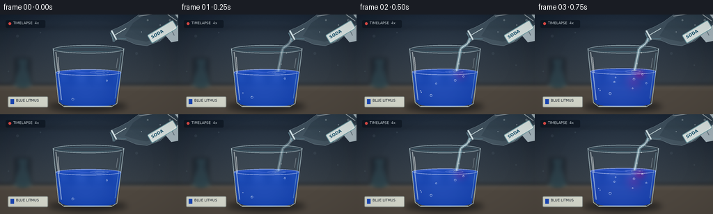
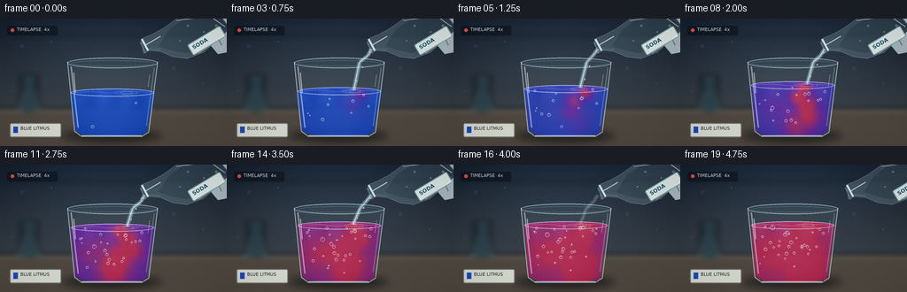

CODING AGENTS AS PIXEL WORLD MODELS
traex/GPT-5.6-Sol · phygen_148
点击播放 · 原生 RGB 像素
逐轮保存的候选
回放视频、检查图与代码变化。
每份候选均可单独播放。实际图片检查记录在下方工具轨迹中。
候选 01播放与检查图
点击播放 · 原生 RGB 像素


展开代码变化
--- 上一保存版本
+++ 本次保存版本
@@ -0,0 +1,247 @@
+from pathlib import Path
+import math
+import numpy as np
+from PIL import Image, ImageDraw, ImageFont, ImageFilter
+import artifact_io
+
+W,H,N = 256,144,20
+S=4
+w,h=W*S,H*S
+rng=np.random.default_rng(148)
+
+try:
+ font_small=ImageFont.truetype('/usr/share/fonts/truetype/dejavu/DejaVuSans.ttf', 6*S)
+ font_tiny=ImageFont.truetype('/usr/share/fonts/truetype/dejavu/DejaVuSans.ttf', 5*S)
+ font_bold=ImageFont.truetype('/usr/share/fonts/truetype/dejavu/DejaVuSans-Bold.ttf', 6*S)
+except:
+ font_small=font_tiny=font_bold=ImageFont.load_default()
+
+def sc(v): return int(round(v*S))
+def pts(seq): return [(sc(x),sc(y)) for x,y in seq]
+def smooth(a):
+ a=np.clip(a,0,1); return a*a*(3-2*a)
+def rgba_layer(): return Image.new('RGBA',(w,h),(0,0,0,0))
+def ellipse(d, box, **kw): d.ellipse(tuple(sc(v) for v in box), **kw)
+def line(d, xy, **kw): d.line(pts(xy), **kw)
+def poly(d, xy, **kw): d.polygon(pts(xy), **kw)
+
+# Fixed cinematic laboratory background, rendered once.
+yy,xx=np.mgrid[0:h,0:w]
+yf=yy/(h-1); xf=xx/(w-1)
+top=np.array([17,27,40.],float); bot=np.array([62,68,72.],float)
+base=top[None,None,:]*(1-yf[...,None])+bot[None,None,:]*yf[...,None]
+# cool window glow behind the experiment
+light=np.exp(-(((xf-.48)/.42)**2+((yf-.28)/.55)**2))*20
+base += light[...,None]*np.array([.72,.86,1.0])
+noise=rng.normal(0,1.1,(h,w,1))
+base=np.clip(base+noise,0,255).astype(np.uint8)
+bg=Image.fromarray(base,'RGB').convert('RGBA')
+
+# distant laboratory shapes, kept deliberately soft
+far=rgba_layer(); d=ImageDraw.Draw(far)
+d.rectangle((0,sc(101),w,h),fill=(77,70,62,255))
+d.rectangle((0,sc(101),w,sc(104)),fill=(121,111,98,170))
+# shelf and a blurred flask silhouette on left
+d.rectangle((0,sc(18),w,sc(20)),fill=(5,12,21,85))
+d.rectangle((sc(21),sc(63),sc(44),sc(101)),fill=(8,20,30,95))
+d.polygon(pts([(26,63),(39,63),(37,77),(46,96),(45,101),(20,101),(19,96),(29,77)]),fill=(36,72,83,90))
+d.ellipse((sc(20),sc(91),sc(46),sc(104)),fill=(30,75,85,80))
+# soft window blocks
+d.rectangle((sc(181),sc(24),sc(237),sc(27)),fill=(130,166,184,22))
+far=far.filter(ImageFilter.GaussianBlur(sc(3)))
+bg=Image.alpha_composite(bg,far)
+
+# Subtle fixed grain flecks / highlights
+fixed=rgba_layer(); fd=ImageDraw.Draw(fixed)
+for x,y,r,a in [(25,31,2,18),(58,26,1,26),(196,56,2,15),(229,73,1,20),(12,82,1,18)]:
+ ellipse(fd,(x-r,y-r,x+r,y+r),fill=(190,218,229,a))
+bg=Image.alpha_composite(bg,fixed)
+
+# deterministic bubble particles
+bubbles=[]
+for k in range(34):
+ bubbles.append(dict(x=rng.uniform(91,164), y0=rng.uniform(72,128), r=rng.uniform(.55,1.65),
+ speed=rng.uniform(1.3,3.2), phase=rng.uniform(0,6.28), born=int(rng.integers(0,14))))
+
+def draw_bottle_and_hand(frame, pour):
+ lay=rgba_layer(); d=ImageDraw.Draw(lay)
+ # The hand and bottle recede rightward at the end.
+ exit_shift=smooth((frame-15)/4)*28
+ dx=exit_shift
+ # pale nitrile-gloved fingertips behind bottle, cropped by edge
+ poly(d,[(235+dx,-4),(256+dx,-4),(256+dx,38),(246+dx,40),(235+dx,27)],fill=(194,210,216,205))
+ ellipse(d,(226+dx,3,260+dx,24),fill=(215,227,229,190))
+ line(d,[(238+dx,5),(250+dx,30)],fill=(150,173,180,130),width=sc(1))
+ # translucent soda bottle, diagonal with mouth at lower left
+ outline=[(159+dx,23),(171+dx,18),(184+dx,11),(202+dx,-2),(246+dx,-7),(260+dx,11),
+ (230+dx,38),(211+dx,45),(195+dx,43),(181+dx,37),(169+dx,36),(162+dx,39)]
+ poly(d,outline,fill=(174,211,221,54),outline=(206,232,237,180))
+ # carbonated clear liquid visible in body
+ poly(d,[(191+dx,12),(207+dx,1),(247+dx,-4),(257+dx,10),(228+dx,34),(210+dx,39),(194+dx,36),(179+dx,31)],
+ fill=(174,219,229,35))
+ # neck and mouth definition
+ line(d,[(181+dx,20),(164+dx,30)],fill=(229,246,247,200),width=sc(1))
+ line(d,[(181+dx,35),(166+dx,34)],fill=(117,163,177,150),width=sc(1))
+ line(d,[(160+dx,23),(167+dx,36)],fill=(226,242,244,230),width=sc(2))
+ line(d,[(158+dx,26),(164+dx,39)],fill=(112,157,170,180),width=sc(1))
+ # glass glare along top edge
+ line(d,[(199+dx,2),(237+dx,-3),(254+dx,9)],fill=(242,253,252,150),width=sc(1))
+ line(d,[(224+dx,39),(239+dx,29)],fill=(232,249,249,120),width=sc(1))
+ # angled label prepared separately for readable identification
+ label=Image.new('RGBA',(44*S,15*S),(0,0,0,0)); ld=ImageDraw.Draw(label)
+ ld.rounded_rectangle((0,0,43*S,14*S),radius=sc(2),fill=(235,242,238,225),outline=(111,158,165,230),width=sc(1))
+ ld.text((sc(4),sc(2.5)),'SODA',font=font_bold,fill=(20,79,104,255))
+ label=label.rotate(31,resample=Image.Resampling.BICUBIC,expand=True)
+ lay.alpha_composite(label,(sc(211+dx),sc(7)))
+ # tiny air bubbles inside bottle
+ d=ImageDraw.Draw(lay)
+ for bx,by,br in [(212,8,1),(230,15,.7),(218,27,.8),(244,8,1.2),(203,25,.6)]:
+ ellipse(d,(bx+dx-br,by-br,bx+dx+br,by+br),outline=(239,252,252,150),width=max(1,sc(.5)))
+ return lay
+
+def liquid_image(frame, level):
+ # Interior tapered mask
+ m=Image.new('L',(w,h),0); md=ImageDraw.Draw(m)
+ md.polygon(pts([(80,level),(174,level),(166,126),(157,131),(94,131),(85,126)]),fill=244)
+ md.ellipse((sc(80),sc(level-4),sc(174),sc(level+5)),fill=250)
+ md.ellipse((sc(88),sc(123),sc(166),sc(133)),fill=245)
+ # reaction progress: colorless acidic soda drives blue -> red litmus
+ p=smooth((frame-1)/18)
+ X=xx/S; Y=yy/S
+ # curling red-purple plumes descend from stream impact before homogenizing
+ centers=[]
+ for j in range(5):
+ cy=level+5+j*10
+ cx=143 + 7*math.sin(frame*.46+j*1.55) - j*2
+ centers.append((cx,cy,9+2*j,8+3*j))
+ plume=np.zeros((h,w),float)
+ reach=max(0,frame-1)/10
+ for j,(cx,cy,sx,sy) in enumerate(centers):
+ amp=np.clip(reach*2.2-j*.22,0,1)
+ plume=np.maximum(plume,amp*np.exp(-(((X-cx)/sx)**2+((Y-cy)/sy)**2)))
+ # weak broad lateral eddies
+ plume=np.maximum(plume, np.clip((frame-4)/10,0,1)*.55*np.exp(-(((X-116)/28)**2+((Y-100)/17)**2)))
+ r=np.clip(p*.88 + plume*(1-p*.55),0,1)
+ # Three-stop litmus gradient: cobalt -> violet -> raspberry/red.
+ blue=np.array([16.,67.,187.]); violet=np.array([92.,35.,158.]); red=np.array([183.,36.,77.])
+ a=np.clip(r*2,0,1)[...,None]; b=np.clip((r-.5)*2,0,1)[...,None]
+ col=blue*(1-a)+violet*a
+ col=col*(1-b)+red*b
+ # physical illumination: middle highlight, darker lower edges, dancing caustics
+ centerlight=15*np.exp(-((X-124)/43)**2)
+ depth=np.clip((Y-level)/65,0,1)
+ caust=5*np.sin(X*.23+frame*.33)*np.exp(-((Y-(level+5))/12)**2)
+ col += (centerlight-depth*12+caust)[...,None]
+ alpha=np.array(m,dtype=float)[...,None]/255
+ arr=np.zeros((h,w,4),dtype=np.uint8)
+ arr[...,:3]=np.clip(col,0,255).astype(np.uint8)
+ arr[...,3]=np.clip(alpha[...,0]*235,0,255).astype(np.uint8)
+ return Image.fromarray(arr,'RGBA')
+
+def render(frame):
+ im=bg.copy()
+ # shadows on bench
+ shadow=rgba_layer(); sd=ImageDraw.Draw(shadow)
+ ellipse(sd,(69,124,183,141),fill=(0,4,10,110))
+ ellipse(sd,(86,129,170,137),fill=(2,4,7,145))
+ shadow=shadow.filter(ImageFilter.GaussianBlur(sc(4)))
+ im=Image.alpha_composite(im,shadow)
+
+ # Bare glass body tint is behind the solution.
+ glass=rgba_layer(); gd=ImageDraw.Draw(glass)
+ poly(gd,[(76,49),(178,49),(168,128),(160,133),(92,133),(84,128)],fill=(182,214,222,15))
+ # back rim
+ ellipse(gd,(76,44,178,56),fill=(159,202,213,18),outline=(213,238,242,155),width=sc(1))
+ ellipse(gd,(80,47,174,54),outline=(87,138,153,115),width=sc(1))
+ im=Image.alpha_composite(im,glass)
+
+ # liquid rises visibly while soda is poured
+ level=83-15*smooth(frame/15)
+ im=Image.alpha_composite(im,liquid_image(frame,level))
+
+ # surface meniscus and turbulent ripples
+ surf=rgba_layer(); sd=ImageDraw.Draw(surf)
+ base_col=(80,110,230,150) if frame<4 else ((178,85,182,160) if frame<12 else (231,91,126,165))
+ ellipse(sd,(80,level-4,174,level+5),outline=(219,224,250,150),width=sc(1))
+ # liquid colored inside the top ellipse, with bright back edge
+ line(sd,[(84,level),(104,level-1),(124,level+1),(145,level-1),(171,level)],fill=base_col,width=sc(1))
+ for j in range(3):
+ phase=frame*.8+j*1.8
+ cx=143+math.sin(phase)*3
+ ellipse(sd,(cx-7-j*3,level-1-j*.2,cx+7+j*3,level+2+j*.3),outline=(228,235,250,70-j*12),width=sc(.65))
+ im=Image.alpha_composite(im,surf)
+
+ # Carbonation bubbles within liquid.
+ bub=rgba_layer(); bd=ImageDraw.Draw(bub)
+ for q in bubbles:
+ if frame<q['born']: continue
+ age=frame-q['born']
+ span=max(7, (q['y0']-level)/q['speed'])
+ cyc=age%span
+ y=q['y0']-cyc*q['speed']
+ if y<level+1: continue
+ x=q['x']+2.2*math.sin(q['phase']+age*.65)
+ rr=q['r']*(1+.012*(q['y0']-y))
+ ellipse(bd,(x-rr,y-rr,x+rr,y+rr),outline=(237,245,255,175),width=max(1,sc(.45)))
+ ellipse(bd,(x-rr*.35,y-rr*.65,x+rr*.05,y-rr*.25),fill=(255,255,255,145))
+ im=Image.alpha_composite(im,bub)
+
+ # Pour stream, from frame 1 through frame 15; nearly colorless, with highlights.
+ pour=smooth((frame+.2)/2)*(1-smooth((frame-14.5)/2.5))
+ if pour>.03:
+ stream=rgba_layer(); st=ImageDraw.Draw(stream)
+ wig=math.sin(frame*.78)*1.3
+ path=[(163,34),(158+wig,42),(150-wig*.3,49),(143+wig*.35,level-1)]
+ line(st,path,fill=(177,226,239,int(105*pour)),width=sc(5))
+ line(st,path,fill=(240,252,252,int(205*pour)),width=sc(1.25))
+ # droplets hugging stream and splash crown
+ for j in range(3):
+ u=(j+.35)/3
+ x=163*(1-u)+(143+wig*.35)*u + math.sin(frame+j)*1.2
+ y=34*(1-u)+(level-1)*u
+ ellipse(st,(x-1,y-1,x+1,y+1),fill=(236,251,252,int(160*pour)))
+ for ang in [-2,-1,1,2]:
+ x=143+ang*3; y=level-1-abs(ang)*.7
+ line(st,[(143,level),(x,y)],fill=(230,246,250,int(125*pour)),width=sc(.7))
+ stream=stream.filter(ImageFilter.GaussianBlur(sc(.18)))
+ im=Image.alpha_composite(im,stream)
+
+ # Front glass contours and specular highlights.
+ front=rgba_layer(); fd=ImageDraw.Draw(front)
+ line(fd,[(76,49),(84,127),(92,133),(160,133),(168,128),(178,49)],fill=(213,237,241,155),width=sc(1))
+ line(fd,[(80,54),(88,123)],fill=(245,253,251,120),width=sc(1.5))
+ line(fd,[(174,55),(165,121)],fill=(157,202,213,105),width=sc(1))
+ line(fd,[(92,132),(160,132)],fill=(233,247,247,165),width=sc(1))
+ # short bright reflections on glass
+ line(fd,[(83,61),(85,84)],fill=(255,255,255,150),width=sc(1))
+ line(fd,[(169,63),(167,77)],fill=(240,252,253,90),width=sc(.8))
+ im=Image.alpha_composite(im,front)
+
+ # bottle and hand on top of stream origin
+ im=Image.alpha_composite(im,draw_bottle_and_hand(frame,pour))
+
+ # small label card on bench makes the starting reagent unmistakable
+ card=rgba_layer(); cd=ImageDraw.Draw(card)
+ cd.rounded_rectangle((sc(11),sc(118),sc(69),sc(134)),radius=sc(2),fill=(225,228,216,230),outline=(124,132,127,220),width=sc(1))
+ cd.rectangle((sc(15),sc(122),sc(20),sc(129)),fill=(27,71,183,255))
+ cd.text((sc(23),sc(121)),'BLUE LITMUS',font=font_tiny,fill=(30,38,48,255))
+ im=Image.alpha_composite(im,card)
+
+ # unobtrusive time-lapse cue
+ hud=rgba_layer(); hd=ImageDraw.Draw(hud)
+ hd.rounded_rectangle((sc(8),sc(8),sc(65),sc(19)),radius=sc(2),fill=(3,10,18,115))
+ ellipse(hd,(12,11,16,15),fill=(241,78,72,230))
+ hd.text((sc(19),sc(9.2)),'TIMELAPSE 4x',font=font_tiny,fill=(231,241,245,235))
+ im=Image.alpha_composite(im,hud)
+
+ # mild vignette for optical realism
+ arr=np.array(im.convert('RGB'),dtype=np.float32)
+ Y0,X0=np.mgrid[0:h,0:w]
+ rr=((X0-w*.5)/(w*.72))**2+((Y0-h*.48)/(h*.85))**2
+ vig=np.clip(1-.14*np.maximum(rr-.25,0),.78,1)[...,None]
+ arr=np.clip(arr*vig,0,255).astype(np.uint8)
+ out=Image.fromarray(arr).resize((W,H),Image.Resampling.LANCZOS)
+ return np.array(out,dtype=np.uint8)
+
+frames=np.stack([render(i) for i in range(N)],axis=0)
+artifact_io.save(frames,Path(__file__).resolve().parent)
可观测工具轨迹
实际执行的命令与返回图片。
命令 1exit 0
/bin/bash -lc "cat prompt.txt && printf '\\n---RULES---\\n' && cat GENERATION_RULES.md && printf '\\n---SPEC---\\n' && cat task_spec.json"
命令 2exit 0
/bin/bash -lc "find . -maxdepth 2 -type f -printf '%p\\n' | sort"
命令 3exit 0
/bin/bash -lc "which ffmpeg || true; which python3; python3 - <<'PY' mods=['PIL','numpy','cv2','imageio','moviepy','cairo'] for m in mods: try: x=__import__(m); print(m,'OK',getattr(x,'__version__','')) except Exception as e: print(m,'NO',e) PY"
命令 4exit 0
/bin/bash -lc 'cat artifact_io.py'
命令 5exit 0
/bin/bash -lc "cat > generate.py <<'PY'
from pathlib import Path
import math
import numpy as np
from PIL import Image, ImageDraw, ImageFont, ImageFilter
import artifact_io
W,H,N = 256,144,20
S=4
w,h=W*S,H*S
rng=np.random.default_rng(148)
try:
font_small=ImageFont.truetype('/usr/share/fonts/truetype/dejavu/DejaVuSans.ttf', 6*S)
font_tiny=ImageFont.truetype('/usr/share/fonts/truetype/dejavu/DejaVuSans.ttf', 5*S)
font_bold=ImageFont.truetype('/usr/share/fonts/truetype/dejavu/DejaVuSans-Bold.ttf', 6*S)
except:
font_small=font_tiny=font_bold=ImageFont.load_default()
def sc(v): return int(round(v*S))
def pts(seq): return [(sc(x),sc(y)) for x,y in seq]
def smooth(a):
a=np.clip(a,0,1); return a*a*(3-2*a)
def rgba_layer(): return Image.new('RGBA',(w,h),(0,0,0,0))
def ellipse(d, box, **kw): d.ellipse(tuple(sc(v) for v in box), **kw)
def line(d, xy, **kw): d.line(pts(xy), **kw)
def poly(d, xy, **kw): d.polygon(pts(xy), **kw)
# Fixed cinematic laboratory background, rendered once.
yy,xx=np.mgrid[0:h,0:w]
yf=yy/(h-1); xf=xx/(w-1)
top=np.array([17,27,40.],float); bot=np.array([62,68,72.],float)
base=top[None,None,:]*(1-yf[...,None])+bot[None,None,:]*yf[...,None]
# cool window glow behind the experiment
light=np.exp(-(((xf-.48)/.42)**2+((yf-.28)/.55)**2))*20
base += light[...,None]*np.array([.72,.86,1.0])
noise=rng.normal(0,1.1,(h,w,1))
base=np.clip(base+noise,0,255).astype(np.uint8)
bg=Image.fromarray(base,'RGB').convert('RGBA')
# distant laboratory shapes, kept deliberately soft
far=rgba_layer(); d=ImageDraw.Draw(far)
d.rectangle((0,sc(101),w,h),fill=(77,70,62,255))
d.rectangle((0,sc(101),w,sc(104)),fill=(121,111,98,170))
# shelf and a blurred flask silhouette on left
d.rectangle((0,sc(18),w,sc(20)),fill=(5,12,21,85))
d.rectangle((sc(21),sc(63),sc(44),sc(101)),fill=(8,20,30,95))
d.polygon(pts([(26,63),(39,63),(37,77),(46,96),(45,101),(20,101),(19,96),(29,77)]),fill=(36,72,83,90))
d.ellipse((sc(20),sc(91),sc(46),sc(104)),fill=(30,75,85,80))
# soft window blocks
d.rectangle((sc(181),sc(24),sc(237),sc(27)),fill=(130,166,184,22))
far=far.filter(ImageFilter.GaussianBlur(sc(3)))
bg=Image.alpha_composite(bg,far)
# Subtle fixed grain flecks / highlights
fixed=rgba_layer(); fd=ImageDraw.Draw(fixed)
for x,y,r,a in [(25,31,2,18),(58,26,1,26),(196,56,2,15),(229,73,1,20),(12,82,1,18)]:
ellipse(fd,(x-r,y-r,x+r,y+r),fill=(190,218,229,a))
bg=Image.alpha_composite(bg,fixed)
# deterministic bubble particles
bubbles=[]
for k in range(34):
bubbles.append(dict(x=rng.uniform(91,164), y0=rng.uniform(72,128), r=rng.uniform(.55,1.65),
speed=rng.uniform(1.3,3.2), phase=rng.uniform(0,6.28), born=int(rng.integers(0,14))))
def draw_bottle_and_hand(frame, pour):
lay=rgba_layer(); d=ImageDraw.Draw(lay)
# The hand and bottle recede rightward at the end.
exit_shift=smooth((frame-15)/4)*28
dx=exit_shift
# pale nitrile-gloved fingertips behind bottle, cropped by edge
poly(d,[(235+dx,-4),(256+dx,-4),(256+dx,38),(246+dx,40),(235+dx,27)],fill=(194,210,216,205))
ellipse(d,(226+dx,3,260+dx,24),fill=(215,227,229,190))
line(d,[(238+dx,5),(250+dx,30)],fill=(150,173,180,130),width=sc(1))
# translucent soda bottle, diagonal with mouth at lower left
outline=[(159+dx,23),(171+dx,18),(184+dx,11),(202+dx,-2),(246+dx,-7),(260+dx,11),
(230+dx,38),(211+dx,45),(195+dx,43),(181+dx,37),(169+dx,36),(162+dx,39)]
poly(d,outline,fill=(174,211,221,54),outline=(206,232,237,180))
# carbonated clear liquid visible in body
poly(d,[(191+dx,12),(207+dx,1),(247+dx,-4),(257+dx,10),(228+dx,34),(210+dx,39),(194+dx,36),(179+dx,31)],
fill=(174,219,229,35))
# neck and mouth definition
line(d,[(181+dx,20),(164+dx,30)],fill=(229,246,247,200),width=sc(1))
line(d,[(181+dx,35),(166+dx,34)],fill=(117,163,177,150),width=sc(1))
line(d,[(160+dx,23),(167+dx,36)],fill=(226,242,244,230),width=sc(2))
line(d,[(158+dx,26),(164+dx,39)],fill=(112,157,170,180),width=sc(1))
# glass glare along top edge
line(d,[(199+dx,2),(237+dx,-3),(254+dx,9)],fill=(242,253,252,150),width=sc(1))
line(d,[(224+dx,39),(239+dx,29)],fill=(232,249,249,120),width=sc(1))
# angled label prepared separately for readable identification
label=Image.new('RGBA',(44*S,15*S),(0,0,0,0)); ld=ImageDraw.Draw(label)
ld.rounded_rectangle((0,0,43*S,14*S),radius=sc(2),fill=(235,242,238,225),outline=(111,158,165,230),width=sc(1))
ld.text((sc(4),sc(2.5)),'SODA',font=font_bold,fill=(20,79,104,255))
label=label.rotate(31,resample=Image.Resampling.BICUBIC,expand=True)
lay.alpha_composite(label,(sc(211+dx),sc(7)))
# tiny air bubbles inside bottle
d=ImageDraw.Draw(lay)
for bx,by,br in [(212,8,1),(230,15,.7),(218,27,.8),(244,8,1.2),(203,25,.6)]:
ellipse(d,(bx+dx-br,by-br,bx+dx+br,by+br),outline=(239,252,252,150),width=max(1,sc(.5)))
return lay
def liquid_image(frame, level):
# Interior tapered mask
m=Image.new('L',(w,h),0); md=ImageDraw.Draw(m)
md.polygon(pts([(80,level),(174,level),(166,126),(157,131),(94,131),(85,126)]),fill=244)
md.ellipse((sc(80),sc(level-4),sc(174),sc(level+5)),fill=250)
md.ellipse((sc(88),sc(123),sc(166),sc(133)),fill=245)
# reaction progress: colorless acidic soda drives blue -> red litmus
p=smooth((frame-1)/18)
X=xx/S; Y=yy/S
# curling red-purple plumes descend from stream impact before homogenizing
centers=[]
for j in range(5):
cy=level+5+j*10
cx=143 + 7*math.sin(frame*.46+j*1.55) - j*2
centers.append((cx,cy,9+2*j,8+3*j))
plume=np.zeros((h,w),float)
reach=max(0,frame-1)/10
for j,(cx,cy,sx,sy) in enumerate(centers):
amp=np.clip(reach*2.2-j*.22,0,1)
plume=np.maximum(plume,amp*np.exp(-(((X-cx)/sx)**2+((Y-cy)/sy)**2)))
# weak broad lateral eddies
plume=np.maximum(plume, np.clip((frame-4)/10,0,1)*.55*np.exp(-(((X-116)/28)**2+((Y-100)/17)**2)))
r=np.clip(p*.88 + plume*(1-p*.55),0,1)
# Three-stop litmus gradient: cobalt -> violet -> raspberry/red.
blue=np.array([16.,67.,187.]); violet=np.array([92.,35.,158.]); red=np.array([183.,36.,77.])
a=np.clip(r*2,0,1)[...,None]; b=np.clip((r-.5)*2,0,1)[...,None]
col=blue*(1-a)+violet*a
col=col*(1-b)+red*b
# physical illumination: middle highlight, darker lower edges, dancing caustics
centerlight=15*np.exp(-((X-124)/43)**2)
depth=np.clip((Y-level)/65,0,1)
caust=5*np.sin(X*.23+frame*.33)*np.exp(-((Y-(level+5))/12)**2)
col += (centerlight-depth*12+caust)[...,None]
alpha=np.array(m,dtype=float)[...,None]/255
arr=np.zeros((h,w,4),dtype=np.uint8)
arr[...,:3]=np.clip(col,0,255).astype(np.uint8)
arr[...,3]=np.clip(alpha[...,0]*235,0,255).astype(np.uint8)
return Image.fromarray(arr,'RGBA')
def render(frame):
im=bg.copy()
# shadows on bench
shadow=rgba_layer(); sd=ImageDraw.Draw(shadow)
ellipse(sd,(69,124,183,141),fill=(0,4,10,110))
ellipse(sd,(86,129,170,137),fill=(2,4,7,145))
shadow=shadow.filter(ImageFilter.GaussianBlur(sc(4)))
im=Image.alpha_composite(im,shadow)
# Bare glass body tint is behind the solution.
glass=rgba_layer(); gd=ImageDraw.Draw(glass)
poly(gd,[(76,49),(178,49),(168,128),(160,133),(92,133),(84,128)],fill=(182,214,222,15))
# back rim
ellipse(gd,(76,44,178,56),fill=(159,202,213,18),outline=(213,238,242,155),width=sc(1))
ellipse(gd,(80,47,174,54),outline=(87,138,153,115),width=sc(1))
im=Image.alpha_composite(im,glass)
# liquid rises visibly while soda is poured
level=83-15*smooth(frame/15)
im=Image.alpha_composite(im,liquid_image(frame,level))
# surface meniscus and turbulent ripples
surf=rgba_layer(); sd=ImageDraw.Draw(surf)
base_col=(80,110,230,150) if frame<4 else ((178,85,182,160) if frame<12 else (231,91,126,165))
ellipse(sd,(80,level-4,174,level+5),outline=(219,224,250,150),width=sc(1))
# liquid colored inside the top ellipse, with bright back edge
line(sd,[(84,level),(104,level-1),(124,level+1),(145,level-1),(171,level)],fill=base_col,width=sc(1))
for j in range(3):
phase=frame*.8+j*1.8
cx=143+math.sin(phase)*3
ellipse(sd,(cx-7-j*3,level-1-j*.2,cx+7+j*3,level+2+j*.3),outline=(228,235,250,70-j*12),width=sc(.65))
im=Image.alpha_composite(im,surf)
# Carbonation bubbles within liquid.
bub=rgba_layer(); bd=ImageDraw.Draw(bub)
for q in bubbles:
if frame<q['born']: continue
age=frame-q['born']
span=max(7, (q['y0']-level)/q['speed'])
cyc=age%span
y=q['y0']-cyc*q['speed']
if y<level+1: continue
x=q['x']+2.2*math.sin(q['phase']+age*.65)
rr=q['r']*(1+.012*(q['y0']-y))
ellipse(bd,(x-rr,y-rr,x+rr,y+rr),outline=(237,245,255,175),width=max(1,sc(.45)))
ellipse(bd,(x-rr*.35,y-rr*.65,x+rr*.05,y-rr*.25),fill=(255,255,255,145))
im=Image.alpha_composite(im,bub)
# Pour stream, from frame 1 through frame 15; nearly colorless, with highlights.
pour=smooth((frame+.2)/2)*(1-smooth((frame-14.5)/2.5))
if pour>.03:
stream=rgba_layer(); st=ImageDraw.Draw(stream)
wig=math.sin(frame*.78)*1.3
path=[(163,34),(158+wig,42),(150-wig*.3,49),(143+wig*.35,level-1)]
line(st,path,fill=(177,226,239,int(105*pour)),width=sc(5))
line(st,path,fill=(240,252,252,int(205*pour)),width=sc(1.25))
# droplets hugging stream and splash crown
for j in range(3):
u=(j+.35)/3
x=163*(1-u)+(143+wig*.35)*u + math.sin(frame+j)*1.2
y=34*(1-u)+(level-1)*u
ellipse(st,(x-1,y-1,x+1,y+1),fill=(236,251,252,int(160*pour)))
for ang in [-2,-1,1,2]:
x=143+ang*3; y=level-1-abs(ang)*.7
line(st,[(143,level),(x,y)],fill=(230,246,250,int(125*pour)),width=sc(.7))
stream=stream.filter(ImageFilter.GaussianBlur(sc(.18)))
im=Image.alpha_composite(im,stream)
# Front glass contours and specular highlights.
front=rgba_layer(); fd=ImageDraw.Draw(front)
line(fd,[(76,49),(84,127),(92,133),(160,133),(168,128),(178,49)],fill=(213,237,241,155),width=sc(1))
line(fd,[(80,54),(88,123)],fill=(245,253,251,120),width=sc(1.5))
line(fd,[(174,55),(165,121)],fill=(157,202,213,105),width=sc(1))
line(fd,[(92,132),(160,132)],fill=(233,247,247,165),width=sc(1))
# short bright reflections on glass
line(fd,[(83,61),(85,84)],fill=(255,255,255,150),width=sc(1))
line(fd,[(169,63),(167,77)],fill=(240,252,253,90),width=sc(.8))
im=Image.alpha_composite(im,front)
# bottle and hand on top of stream origin
im=Image.alpha_composite(im,draw_bottle_and_hand(frame,pour))
# small label card on bench makes the starting reagent unmistakable
card=rgba_layer(); cd=ImageDraw.Draw(card)
cd.rounded_rectangle((sc(11),sc(118),sc(69),sc(134)),radius=sc(2),fill=(225,228,216,230),outline=(124,132,127,220),width=sc(1))
cd.rectangle((sc(15),sc(122),sc(20),sc(129)),fill=(27,71,183,255))
cd.text((sc(23),sc(121)),'BLUE LITMUS',font=font_tiny,fill=(30,38,48,255))
im=Image.alpha_composite(im,card)
# unobtrusive time-lapse cue
hud=rgba_layer(); hd=ImageDraw.Draw(hud)
hd.rounded_rectangle((sc(8),sc(8),sc(65),sc(19)),radius=sc(2),fill=(3,10,18,115))
ellipse(hd,(12,11,16,15),fill=(241,78,72,230))
hd.text((sc(19),sc(9.2)),'TIMELAPSE 4x',font=font_tiny,fill=(231,241,245,235))
im=Image.alpha_composite(im,hud)
# mild vignette for optical realism
arr=np.array(im.convert('RGB'),dtype=np.float32)
Y0,X0=np.mgrid[0:h,0:w]
rr=((X0-w*.5)/(w*.72))**2+((Y0-h*.48)/(h*.85))**2
vig=np.clip(1-.14*np.maximum(rr-.25,0),.78,1)[...,None]
arr=np.clip(arr*vig,0,255).astype(np.uint8)
out=Image.fromarray(arr).resize((W,H),Image.Resampling.LANCZOS)
return np.array(out,dtype=np.uint8)
frames=np.stack([render(i) for i in range(N)],axis=0)
artifact_io.save(frames,Path(__file__).resolve().parent)
PY
python3 generate.py
ls -lh pixels.npz inspection.png index.html frames/00.png frames/19.png"视觉工具实际返回图片 1

保存候选 1 份；完成命令 5 次；可验证图片返回 1 张。原始 API 响应与完整日志保留在本地。